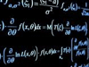
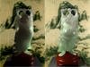

According to Mathematics Genealogy, my "ancestors" are:
Henry A. Murray (1928) → Donald W. MacKinnon (1933) → John Clinton Loehlin (1957) → Robert Patrick Plummer (1970) →
Henry Fuchs (1975) → Greg Turk (1992) →

Math for graphics?
"What math should I learn in order to study computer graphics?" This is perhaps the most common general question that students ask about computer graphics.
My Ph.D. advisor Greg Turk wrote a useful article on this topic.
The mixed class at Zhejiang University
I was in the mixed class at Zhejiang University from 1998 to 2002. Prof. Haiping Xu at the University of Massachusetts Dartmouth explained what
the mixed class is in this article.
Hangzhou
The wiki page of my hometown: Hangzhou. The Venetian merchant Marco Polo claimed that he visited Hangzhou in the late 13th century and he referred to the city
as "beyond dispute the finest and the noblest in the world".

Jade Happy Buddha
My very early course project at Stanford. As you can tell, I was more interested in photorealistic rendering at that time. Surprisingly, this course work page is alive.
I served in the technical paper committees of the following conferences: SIGGRAPH Asia 2015; SIGGRAPH 2014; CASA 2012, 2013; SCA 2012, 2013; I3D 2012, 2013; CAD&CG 2013; Pacific Graphics 2010.